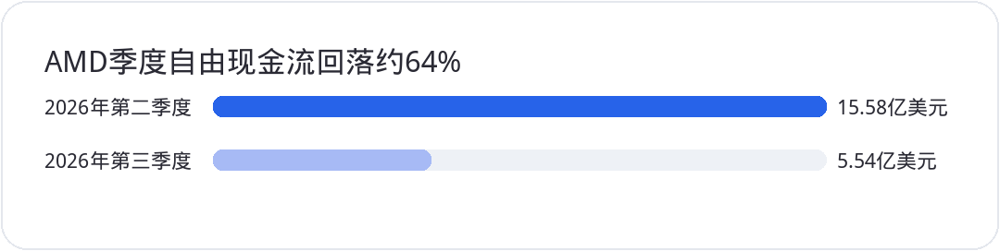

<div style="margin:0;padding:0;background:#f5f7fa;color:#2a2a34;font-size:16px;line-height:1.9;font-family:-apple-system,BlinkMacSystemFont,'SF Pro Text','PingFang SC','Hiragino Sans GB','Microsoft YaHei',Arial,sans-serif;font-variant-numeric:tabular-nums;font-feature-settings:'tnum' 1,'lnum' 1;text-align:left !important;text-align-last:left;letter-spacing:0;word-spacing:normal;white-space:normal;word-break:normal;box-sizing:border-box;"><div style="margin:0;background:#ffffff;padding:28px 22px 44px 22px;box-sizing:border-box;text-align:left !important;text-align-last:left;letter-spacing:0;word-spacing:normal;white-space:normal;word-break:normal;"><p style="display:block;width:100%;margin:0 0 12px 0;padding:0;color:#2763e9;font-size:10px;line-height:1.6;font-weight:650;letter-spacing:0.12em;text-align:center !important;text-align-last:center;word-spacing:normal;white-space:normal;word-break:normal;box-sizing:border-box;">美股 · 期权 · 资讯 · 观点</p><div style="margin:0 0 30px 0;padding:0;text-align:center !important;text-align-last:center;word-spacing:normal;white-space:normal;word-break:normal;box-sizing:border-box;"></div><div style="margin:0 0 0 0;padding:28px 0 0 0;text-align:left !important;text-align-last:left;letter-spacing:0;word-spacing:normal;white-space:normal;word-break:normal;box-sizing:border-box;"><div style="margin:0 0 12px 0;padding:0;text-align:left !important;line-height:1.2;border:0;display:flex;align-items:center;gap:10px;text-align-last:left;letter-spacing:0;word-spacing:normal;white-space:normal;word-break:normal;box-sizing:border-box;"><span style="display:inline-block;flex:0 0 auto;vertical-align:middle;color:#2763e9;font-size:12px;font-weight:850;letter-spacing:0.12em;line-height:1.2;text-transform:uppercase;border:0;box-sizing:border-box;">0 · FOCUS</span><span style="display:block;flex:1 1 auto;min-width:36px;vertical-align:middle;height:1px;margin:0 0 2px 0;background:#2763e9;line-height:1px;font-size:0;border:0;box-sizing:border-box;"></span></div><p style="margin:0 0 16px 0;padding:0;color:#2a2a34;font-size:22px;line-height:1.45;font-weight:850;text-align:left !important;letter-spacing:0;text-align-last:left;word-spacing:normal;white-space:normal;word-break:normal;box-sizing:border-box;">指数收红的背后，市场广度依然偏弱</p><p style="margin:0 0 16px 0;padding:0;color:#454550;font-size:16px;line-height:1.9;font-weight:400;text-align:left !important;letter-spacing:0;word-spacing:normal;white-space:normal;word-break:normal;text-align-last:left;box-sizing:border-box;">11月3日美股并没有出现全面下跌。<strong style="color:#2a2a34;font-weight:700;box-sizing:border-box;">标普500</strong>收在7568.92点，上涨0.36%；纳斯达克综合指数上涨0.83%，报25372.01点；道指则下跌0.38%，收在51786.72点。<strong style="color:#2a2a34;font-weight:700;box-sizing:border-box;">NVDA</strong>等大型科技股支撑了指数，但标普内部下跌股票多于上涨股票。把这一天概括成AI股票集体崩盘并不准确；把指数收涨当成风险已经解除，同样太早。</p><p style="margin:0 0 16px 0;padding:0;color:#454550;font-size:16px;line-height:1.9;font-weight:400;text-align:left !important;letter-spacing:0;word-spacing:normal;white-space:normal;word-break:normal;text-align-last:left;box-sizing:border-box;">就业数据增加了利率端的压力。美国劳工统计局公布的9月JOLTS职位空缺为752.3万个，8月修正值为719.0万个，职位空缺率从4.3%回升至4.5%，自主离职率从1.9%升至2.1%。劳动需求仍有韧性，市场对快速宽松的押注就要受到检验。10年期美债收益率当日有所上行，利率与科技估值的拉扯没有结束。</p><p style="margin:0 0 16px 0;padding:0;color:#454550;font-size:16px;line-height:1.9;font-weight:400;text-align:left !important;letter-spacing:0;word-spacing:normal;white-space:normal;word-break:normal;text-align-last:left;box-sizing:border-box;">更值得观察的是市场内部的分化：大市值公司托住指数，普通股票却没有形成同样的买盘广度。交易上把标普7569附近的最新收盘位置作为观察基准。若后续指数反弹但上涨家数持续萎缩，应谨慎追涨；只有大型科技股与更广泛的成分股同时改善，反弹的质量才更可信。</p></div><div style="margin:30px 0 0 0;padding:28px 0 0 0;text-align:left !important;text-align-last:left;letter-spacing:0;word-spacing:normal;white-space:normal;word-break:normal;box-sizing:border-box;"><div style="margin:0 0 12px 0;padding:0;text-align:left !important;line-height:1.2;border:0;display:flex;align-items:center;gap:10px;text-align-last:left;letter-spacing:0;word-spacing:normal;white-space:normal;word-break:normal;box-sizing:border-box;"><span style="display:inline-block;flex:0 0 auto;vertical-align:middle;color:#2763e9;font-size:12px;font-weight:850;letter-spacing:0.12em;line-height:1.2;text-transform:uppercase;border:0;box-sizing:border-box;">1 · EARNINGS</span><span style="display:block;flex:1 1 auto;min-width:36px;vertical-align:middle;height:1px;margin:0 0 2px 0;background:#2763e9;line-height:1px;font-size:0;border:0;box-sizing:border-box;"></span></div><p style="margin:0 0 16px 0;padding:0;color:#2a2a34;font-size:22px;line-height:1.45;font-weight:850;text-align:left !important;letter-spacing:0;text-align-last:left;word-spacing:normal;white-space:normal;word-break:normal;box-sizing:border-box;">AMD给出强劲指引，利润增长没有同步变成现金</p><p style="margin:0 0 16px 0;padding:0;color:#454550;font-size:16px;line-height:1.9;font-weight:400;text-align:left !important;letter-spacing:0;word-spacing:normal;white-space:normal;word-break:normal;text-align-last:left;box-sizing:border-box;"><strong style="color:#2a2a34;font-weight:700;box-sizing:border-box;">AMD</strong>第三季度营收133.77亿美元，同比增长45%；数据中心收入85.46亿美元，同比增长97%，几乎翻倍。经调整每股收益2.09美元，经调整毛利率56%。公司给出第四季度约170亿美元的营收指引，上下浮动3%，中值对应同比约增长66%，经调整毛利率预计为55%。强劲的数据中心需求已有实际收入支撑，170亿美元却仍是下一季度预测，不是已实现的销售额。</p><p style="margin:0 0 16px 0;padding:0;color:#454550;font-size:16px;line-height:1.9;font-weight:400;text-align:left !important;letter-spacing:0;word-spacing:normal;white-space:normal;word-break:normal;text-align-last:left;box-sizing:border-box;">真正需要拆开的，是营收扩张与现金转化。AMD第三季度经营现金流12.02亿美元，低于第二季度的23.66亿美元；自由现金流从15.58亿美元降至5.54亿美元，环比减少约64%。与此同时，资本支出还从8.08亿美元降至6.48亿美元。也就是说，现金流下滑并不是因为当季买设备花得更多，营运资本的占用值得进一步检查。</p><p style="margin:4px 0 16px 0;padding:0;text-align:center !important;text-align-last:center;word-spacing:normal;white-space:normal;word-break:normal;box-sizing:border-box;"></p><p style="margin:0 0 16px 0;padding:0;color:#454550;font-size:16px;line-height:1.9;font-weight:400;text-align:left !important;letter-spacing:0;word-spacing:normal;white-space:normal;word-break:normal;text-align-last:left;box-sizing:border-box;">资产负债表也出现了明显变化。库存从84.68亿美元增至114.63亿美元，环比增长35%；应收账款从72.81亿美元增至92.09亿美元，增长26%。与同季总营收环比16%的增速相比，库存和应收占用上升更快。这既可能是下一轮交货的提前备货，也可能带来回款周期和产品结构风险。现在还不能仅凭一季库存增长就断言需求造假或出现坏账。</p><p style="margin:0 0 16px 0;padding:0;color:#454550;font-size:16px;line-height:1.9;font-weight:400;text-align:left !important;letter-spacing:0;word-spacing:normal;white-space:normal;word-break:normal;text-align-last:left;box-sizing:border-box;">债务从32.26亿美元升至70.79亿美元，增幅119%，主要包括8月完成的47.5亿美元票据发行。另一面，现金、现金等价物和短期投资达到157.76亿美元，远高于账面总债务。<strong style="color:#2a2a34;font-weight:700;box-sizing:border-box;">AMD</strong>不是已经出现债务偿付危机，问题是业务高速增长能否逐季改善现金回收效率。关注第四季度库存去化、应收周转、实际自由现金流和55%毛利率能否兑现，比单独追逐营收指引更有价值。</p><p style="margin:0 0 16px 0;padding:0;color:#454550;font-size:16px;line-height:1.9;font-weight:400;text-align:left !important;letter-spacing:0;word-spacing:normal;white-space:normal;word-break:normal;text-align-last:left;box-sizing:border-box;">股价也要按不同交易时段看。11月3日常规时段<strong style="color:#2a2a34;font-weight:700;box-sizing:border-box;">AMD</strong>收在483.90美元，涨3.65%；财报发布后，盘后交易曾在508美元附近。盘后反应支持盈利预期改善，却不能等同于第二天开盘确认突破。上方先观察500至510美元区间是否能在常规时段站稳，再看此前580美元一带的高位供应。下方若失守480美元并回落至473美元附近，应重新评估反弹的持续性。高盛给予700美元目标价属于卖方情景，不能当成已经兑现的公允价值。</p></div><div style="margin:30px 0 0 0;padding:28px 0 0 0;text-align:left !important;text-align-last:left;letter-spacing:0;word-spacing:normal;white-space:normal;word-break:normal;box-sizing:border-box;"><div style="margin:0 0 12px 0;padding:0;text-align:left !important;line-height:1.2;border:0;display:flex;align-items:center;gap:10px;text-align-last:left;letter-spacing:0;word-spacing:normal;white-space:normal;word-break:normal;box-sizing:border-box;"><span style="display:inline-block;flex:0 0 auto;vertical-align:middle;color:#2763e9;font-size:12px;font-weight:850;letter-spacing:0.12em;line-height:1.2;text-transform:uppercase;border:0;box-sizing:border-box;">2 · SOFTWARE</span><span style="display:block;flex:1 1 auto;min-width:36px;vertical-align:middle;height:1px;margin:0 0 2px 0;background:#2763e9;line-height:1px;font-size:0;border:0;box-sizing:border-box;"></span></div><p style="margin:0 0 16px 0;padding:0;color:#2a2a34;font-size:22px;line-height:1.45;font-weight:850;text-align:left !important;letter-spacing:0;text-align-last:left;word-spacing:normal;white-space:normal;word-break:normal;box-sizing:border-box;">PLTR营收增长96%，新签订单只增6%意味着什么</p><p style="margin:0 0 16px 0;padding:0;color:#454550;font-size:16px;line-height:1.9;font-weight:400;text-align:left !important;letter-spacing:0;word-spacing:normal;white-space:normal;word-break:normal;text-align-last:left;box-sizing:border-box;"><strong style="color:#2a2a34;font-weight:700;box-sizing:border-box;">PLTR</strong>第三季度营收23.13亿美元，同比增长96%，环比增长20%；美国商业收入9.84亿美元，同比增长148%，首次超过美国政府业务的9.53亿美元。公司同时报告调整后每股收益0.44美元、调整后自由现金流12.16亿美元。从盈利能力与现金生成看，这份业绩绝非弱财报。</p><p style="margin:0 0 16px 0;padding:0;color:#454550;font-size:16px;line-height:1.9;font-weight:400;text-align:left !important;letter-spacing:0;word-spacing:normal;white-space:normal;word-break:normal;text-align-last:left;box-sizing:border-box;">让市场迟疑的是另一组指标。第三季度新签合同总价值TCV为29.18亿美元，同比增长6%；美国商业TCV为14.63亿美元，同比增长11%。收入和新签TCV不是同一指标，确认收入来自既有合同履约，TCV衡量当期签约规模，单季度大项目的签署时间也会造成波动。不能直接把TCV增长6%翻译成下一季度收入只增长6%。</p><p style="margin:0 0 16px 0;padding:0;color:#454550;font-size:16px;line-height:1.9;font-weight:400;text-align:left !important;letter-spacing:0;word-spacing:normal;white-space:normal;word-break:normal;text-align-last:left;box-sizing:border-box;">反面的数据同样要摆出来：美国商业剩余合同价值达到65.17亿美元，同比增长79%。收入快、新签约慢、剩余合同价值仍快速增加，这三者同时存在，解释了为什么“增长已经崩塌”与“估值完全没问题”两种说法都不可靠。检验下一季度是否延续高增速，应观察TCV能否回升、剩余合同价值能否继续转为确认收入，以及超过50%的调整后自由现金流利润率能否维持。</p><p style="margin:0 0 16px 0;padding:0;color:#454550;font-size:16px;line-height:1.9;font-weight:400;text-align:left !important;letter-spacing:0;word-spacing:normal;white-space:normal;word-break:normal;text-align-last:left;box-sizing:border-box;">估值高意味着好业绩也可能不够好。11月3日<strong style="color:#2a2a34;font-weight:700;box-sizing:border-box;">PLTR</strong>盘中最低触及165.25美元，随后收复169美元，最终收在175.40美元，下跌约1.65%。因此169美元暂时不是已经确认的收盘阻力，更像多空反复争夺的观察位。若再跌破165美元且无法收回，才进一步关注151至161美元区域；若站稳175美元并重新改善相对科技板块表现，短线压力才有缓和迹象。</p></div><div style="margin:30px 0 0 0;padding:28px 0 0 0;text-align:left !important;text-align-last:left;letter-spacing:0;word-spacing:normal;white-space:normal;word-break:normal;box-sizing:border-box;"><div style="margin:0 0 12px 0;padding:0;text-align:left !important;line-height:1.2;border:0;display:flex;align-items:center;gap:10px;text-align-last:left;letter-spacing:0;word-spacing:normal;white-space:normal;word-break:normal;box-sizing:border-box;"><span style="display:inline-block;flex:0 0 auto;vertical-align:middle;color:#2763e9;font-size:12px;font-weight:850;letter-spacing:0.12em;line-height:1.2;text-transform:uppercase;border:0;box-sizing:border-box;">3 · FOCUS</span><span style="display:block;flex:1 1 auto;min-width:36px;vertical-align:middle;height:1px;margin:0 0 2px 0;background:#2763e9;line-height:1px;font-size:0;border:0;box-sizing:border-box;"></span></div><p style="margin:0 0 16px 0;padding:0;color:#2a2a34;font-size:22px;line-height:1.45;font-weight:850;text-align:left !important;letter-spacing:0;text-align-last:left;word-spacing:normal;white-space:normal;word-break:normal;box-sizing:border-box;">中期选举提高政策噪声，却不能直接解释全天股价</p><p style="margin:0 0 16px 0;padding:0;color:#454550;font-size:16px;line-height:1.9;font-weight:400;text-align:left !important;letter-spacing:0;word-spacing:normal;white-space:normal;word-break:normal;text-align-last:left;box-sizing:border-box;">11月3日美国举行中期选举。预测市场在开票期间曾把民主党同时夺取参众两院的概率推到接近99%，但博彩市场价格会快速变化，也不等于正式选举结果。多家媒体当晚已报道民主党取得参议院控制权，众议院归属仍需等待部分选区计票。用某个时点的概率说“99%已经横扫”，在事实层面站不住脚。</p><p style="margin:0 0 16px 0;padding:0;color:#454550;font-size:16px;line-height:1.9;font-weight:400;text-align:left !important;letter-spacing:0;word-spacing:normal;white-space:normal;word-break:normal;text-align-last:left;box-sizing:border-box;">政治影响需要分层。任何一院的控制权变化都会影响委员会主席、调查听证、预算谈判与企业合规压力；两院都改变控制权，监督力度可能更大。数据中心对地方电力、土地和水资源的消耗，确实容易成为州与地方政府的争论焦点。但地方审批和联邦法律不是同一套程序，更不能从选举赔率直接推导出全国数据中心项目停工。</p><p style="margin:0 0 16px 0;padding:0;color:#454550;font-size:16px;line-height:1.9;font-weight:400;text-align:left !important;letter-spacing:0;word-spacing:normal;white-space:normal;word-break:normal;text-align-last:left;box-sizing:border-box;">若民主党控制国会两院，行政部门仍掌握法律规定的总统否决权，重大限制性立法需要面对分立政府的约束。就AI投资而言，监管听证和融资披露成本可能先于全面立法发生变化。市场真正应追踪的是实际出台的州级审批规定、项目电费协议、国会调查范围和云厂商资本支出指引，而非孤立的一张预测市场截图。</p></div><div style="margin:30px 0 0 0;padding:28px 0 0 0;text-align:left !important;text-align-last:left;letter-spacing:0;word-spacing:normal;white-space:normal;word-break:normal;box-sizing:border-box;"><div style="margin:0 0 12px 0;padding:0;text-align:left !important;line-height:1.2;border:0;display:flex;align-items:center;gap:10px;text-align-last:left;letter-spacing:0;word-spacing:normal;white-space:normal;word-break:normal;box-sizing:border-box;"><span style="display:inline-block;flex:0 0 auto;vertical-align:middle;color:#2763e9;font-size:12px;font-weight:850;letter-spacing:0.12em;line-height:1.2;text-transform:uppercase;border:0;box-sizing:border-box;">4 · CAPEX</span><span style="display:block;flex:1 1 auto;min-width:36px;vertical-align:middle;height:1px;margin:0 0 2px 0;background:#2763e9;line-height:1px;font-size:0;border:0;box-sizing:border-box;"></span></div><p style="margin:0 0 16px 0;padding:0;color:#2a2a34;font-size:22px;line-height:1.45;font-weight:850;text-align:left !important;letter-spacing:0;text-align-last:left;word-spacing:normal;white-space:normal;word-break:normal;box-sizing:border-box;">VIX在20附近，防守靠仓位和现金流证据</p><p style="margin:0 0 16px 0;padding:0;color:#454550;font-size:16px;line-height:1.9;font-weight:400;text-align:left !important;letter-spacing:0;word-spacing:normal;white-space:normal;word-break:normal;text-align-last:left;box-sizing:border-box;">11月3日<strong style="color:#2a2a34;font-weight:700;box-sizing:border-box;">VIX</strong>收在20.83左右，仍处于需要给风险留余地的区间。VIX反映未来约30天的隐含波动率，不是预测明天涨跌的水晶球。18、22或30都不能当成市场必然反转的硬阈值。若VIX重新上冲25、同时信用利差和市场广度变差，就要减少追逐高弹性个股；若回到18以下且广度与盈利预期同步改善，风险偏好才更可能稳定。</p><p style="margin:0 0 16px 0;padding:0;color:#454550;font-size:16px;line-height:1.9;font-weight:400;text-align:left !important;letter-spacing:0;word-spacing:normal;white-space:normal;word-break:normal;text-align-last:left;box-sizing:border-box;">未来几周要分清三种市场路径。乐观情景是<strong style="color:#2a2a34;font-weight:700;box-sizing:border-box;">AMD</strong>170亿美元营收指引兑现、自由现金流回升，<strong style="color:#2a2a34;font-weight:700;box-sizing:border-box;">PLTR</strong>新签订单重拾动能，选举政策不确定性逐步消退；中性情景是龙头继续交出漂亮收入，但库存、回款和估值让股价反复震荡；悲观情景是大客户资本开支放慢，库存与应收进一步扩大，市场从AI供应链扩散到更广泛的股票。</p><p style="margin:0 0 16px 0;padding:0;color:#454550;font-size:16px;line-height:1.9;font-weight:400;text-align:left !important;letter-spacing:0;word-spacing:normal;white-space:normal;word-break:normal;text-align-last:left;box-sizing:border-box;">对于已有科技股和半导体仓位，先检查集中度、卖出看跌期权的接仓资金和未来一个月最大可承受回撤。买保护性看跌期权或搭建领口需要比较权利金与上行封顶成本，不要因为恐慌指数升高就不计代价买保险。<strong style="color:#2a2a34;font-weight:700;box-sizing:border-box;">AI需求可以很强，但股东最终拿到的是现金流和每股收益，不是营收指引本身。</strong></p></div><div style="margin:34px 0 0 0;padding:0;border:1px solid #e4e7ed;border-radius:24px;background:#fafbfc;text-align:center !important;box-sizing:border-box;overflow:hidden;text-align-last:center;word-spacing:normal;white-space:normal;word-break:normal;"><p style="margin:0;padding:18px 16px;color:#6a6a78;font-size:14px;line-height:1.8;text-align:center !important;background:#fafbfc;box-sizing:border-box;text-align-last:center;word-spacing:normal;white-space:normal;word-break:normal;">长按识别二维码关注公众号，持续获取每日美股资讯与观点。</p><p style="margin:0;text-align:center !important;background:#ffffff;box-sizing:border-box;text-align-last:center;word-spacing:normal;white-space:normal;word-break:normal;"></p></div><p style="margin:28px 0 0 0;padding:22px 0 0 0;color:#9a9aa8;font-size:12px;line-height:1.8;text-align:center !important;text-align-last:center;word-spacing:normal;white-space:normal;word-break:normal;box-sizing:border-box;">免责声明：本文仅为个人市场观察和交易复盘，不构成任何投资建议；市场有风险，交易需谨慎。点击阅读原文可跳转博客。</p></div></div>
